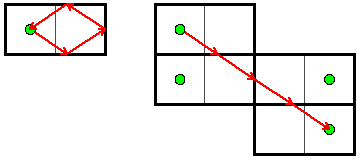
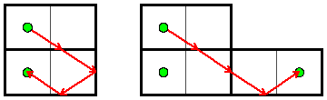
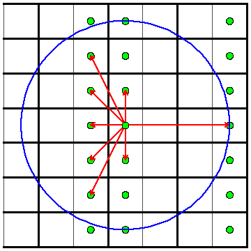

To keep things exciting, we ended the qualification round with Hall of Mirrors: a truly challenging problem. It is difficult to see how to get started, and then it is even more difficult to actually get the implementation right!
How To Understand Mirrors
The first step in solving this problem is reducing the set of all light ray angles to something that you can actually check. And to do that, it is helpful to use a famous trick for thinking about mirrors. Look at the two diagrams below. Do you see why they are really illustrating the exact same thing?
In the left picture, there is a light ray in a 2x1 room that reflects off three mirrors, and then ends back where it started. Let's focus on where the light ray reflects off the bottom mirror. Instead of drawing the reflected light ray, let's take the entire room, and draw it reflected about this mirror. We can then draw the rest of the light ray's path in this picture. This is illustrated in the left diagram below:
Next, once the light ray hits the right mirror, we can again draw the entire room reflected about that mirror, and then continue drawing the rest of the path there. Finally, we can do the same thing for the one remaining mirror to get the original picture from above. This kind of drawing has two really nice properties for us:
The Small Input
If you get this far, you can either try to solve just the small input or both the small and the large. The small input isn't that much smaller really, but it is simpler because you cannot have mirrors in the middle of rooms. This means that we can take the original room and repeatedly reflect it about each of the four walls to cover the whole plane. This is shown below:
Now let's look at your position in each of these reflected rooms. We claim that these give precisely the directions you can look in order to see a reflection of yourself. Try tracing through a few cases and you will see why.
So to solve the problem, you can iterate over all of these positions that are within distance D of you, and count how many unique directions they give. (Remember that the light ray stops once it returns to you, so if two reflections are in precisely the same direction, only one is visible.)
The Large Input
The large input is not any harder conceptually, but you will have to do some more implementation. The idea is to iterate over all squares within distance D of your starting location, and to follow light rays that are directed towards each of these squares. In particular, how many of these light rays return to the starting position after distance D? The challenge of following rays through a 2-dimensional grid is called "ray casting", and solving it efficiently was the key to Wolfenstein 3D and other games of that era.
This isn't too hard in theory, but the implementation can get nasty if you do not set things up carefully. One approach that helps is to first focus on rays that are moving more vertically than they are horizontally. Then, iterate over each horizontal line the ray touches. Between each of these steps, it will touch 0 or 1 vertical lines, making the processing fairly straightforward (except for corners!).
If you are stuck, try looking through the submitted solutions.